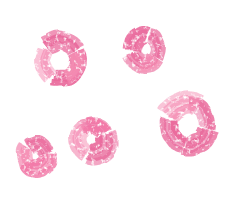
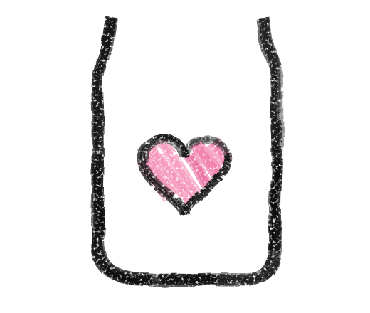
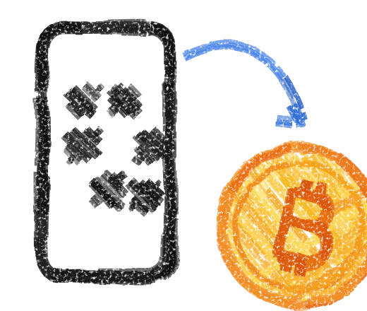

A piggy bank for a child's Bitcoin
Put Bitcoin in a jar for a child you love. Anyone can top it up, the child gets a small allowance on a schedule, and on the day you choose the whole jar becomes theirs.
Testnet demo. Test coins only, no real money.
How it works
-

1 Make a jar
Pick the child, how much they can get each period, and the day the jar becomes theirs. Name two or three guardians for emergencies.
-

2 Anyone can top it up
Every jar has its own Bitcoin address and QR code. Grandparents, aunties, friends: scan it from any Bitcoin wallet or exchange app.
-
3 A little at a time, then all of it
The child gets a capped allowance each period. On the unlock date the jar, and the Bitcoin in it, moves to the child's own account. Every adult's access ends there.
What you're trusting
Sats Jar hides the plumbing, not the trust. Here is what you can check yourself, and what you are relying on.
You can check
- The rule: each jar can only pay a capped allowance to the child's address, or an emergency payment that guardians approve and that waits out a public delay.
- Every top-up and every payment, with links to the public records.
- Every attempt the rule refused, and why.
You're trusting
- NEAR's signing network, which signs a jar's Bitcoin payments once the rule says yes.
- A Bitcoin light client, which tells the jar that a top-up really happened. It has a few named admins and one relayer.
- Our helper accounts. They pay fees and start scheduled payments. They cannot move coins outside the rule.
- The child's login. After handover, whoever holds it holds the jar, so the child saves a recovery phrase.
Check it yourself
Every jar has a see-how-it-works page: its NFT, its Bitcoin address, and every transaction behind it, including the ones the rule refused.
Open the proof view